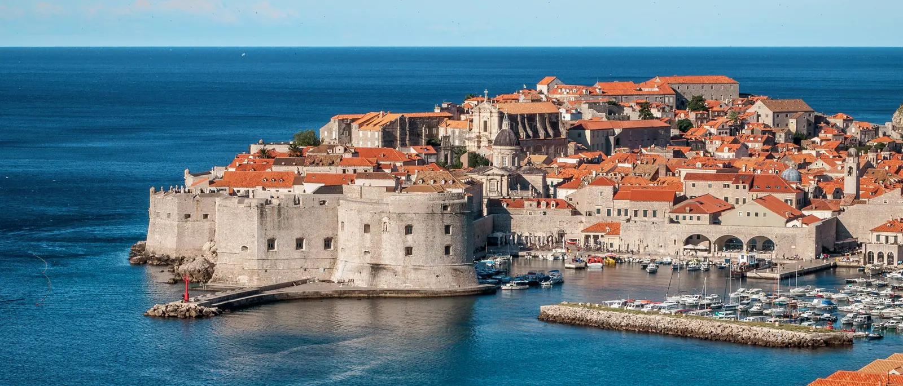

Privatni transfer od zračne luke Dubrovnik do Splita i Makarske
Sletite u zračnu luku Dubrovnik i odvezite se izravno u Split, Makarsku ili na drugo odredište udaljeno najmanje 50 km, privatnim automobilom po fiksnoj cijeni dogovorenoj prije putovanja.

Vaš privatni transfer od zračne luke Dubrovnik
Zračna luka Dubrovnik nalazi se u Čilipima u Konavlima, oko 20 km od starog grada, a odatle obalna cesta vodi na sjever prema Splitu i Makarskoj. Vozač vas čeka u dolaznoj dvorani s natpisom s vašim imenom i vozi vas ravno na vašu adresu, bez zajedničkog šatla, bez čekanja da se napuni minibus i bez presjedanja.
Udaljenosti i trajanje vožnje
Ovo su uobičajene vrijednosti pri normalnom prometu. Točna udaljenost ovisi o adresi preuzimanja i odredišta, a obrazac za rezervaciju prikazuje konačnu fiksnu cijenu za vašu rutu. Nudimo transfere s ovog aerodroma do odredišta udaljenih najmanje 50 km.
| Ruta | Udaljenost | Trajanje |
|---|---|---|
| Split (grad, trajektna luka, Zračna luka Split) | oko 240 km | 3 do 3,5 sata |
| Makarska | oko 175 km | oko 2 sata 45 minuta do 3 sata |
Zašto privatni transfer na dugoj relaciji
Tri sata je dugo vrijeme na obalnoj cesti. Privatni automobil znači jednu fiksnu cijenu za cijelo vozilo, putovali sami ili u grupi do osam osoba, i vozača koji je od trenutka slijetanja posvećen samo vama. Dječje sjedalice su besplatne na zahtjev.
- Bez zajedničkog šatla, izravno na vašu adresu
- Jedna fiksna cijena po vozilu, a ne po putniku
- Praćenje leta s 60 minuta besplatnog čekanja na aerodromu
- Prostrana vozila za obitelji i grupe
Fiksna cijena, sve uključeno
Cijena se dogovara prije polaska. Temelji se na stvarnoj duljini rute i klasi vozila, a ne na taksimetru, te već uključuje cestarine, gorivo i doček na aerodromu. Po dolasku ne plaćate ništa dodatno, a vozačev put do aerodroma nikada se ne dodaje vašoj cijeni.
Slijećete li umjesto toga u Split?
Preuzimamo putnike i na Zračnoj luci Split, gdje počinje većina naših transfera.
Transferi sa Zračne luke Split · Zračna luka Split do Dubrovnika
Česta pitanja
Koliko je Split udaljen od zračne luke Dubrovnik?
Oko 240 km cestom, što je otprilike 3 do 3,5 sata vožnje ovisno o prometu i zaustavljanjima.
Koliko traje transfer od zračne luke Dubrovnik do Makarske?
Makarska je udaljena oko 175 km, otprilike 2 sata 45 minuta do 3 sata.
Koliko košta privatni transfer od zračne luke Dubrovnik?
Cijena ovisi o ruti i vozilu te je fiksna prije putovanja, bez skrivenih troškova. Upišite podatke u naš obrazac za rezervaciju i odmah dobivate ponudu.
Hoće li vozač čekati ako mi let kasni?
Pratimo vaš broj leta u stvarnom vremenu pa vozač sam prilagodi vrijeme preuzimanja. Za kašnjenja leta ne naplaćujemo ništa dodatno: na aerodromu je prvih 60 minuta nakon slijetanja besplatno, a kod preuzimanja s adrese vozač čeka do 15 minuta nakon dogovorenog vremena.
Mogu li rezervirati i povratak do zračne luke Dubrovnik?
Da, pri rezervaciji odaberite Povratna i dogovorite obje vožnje odjednom. Na ukupnu cijenu automatski dobivate 5% popusta.
Odakle dolazi vozač i naplaćuje li se dodatno?
Naši vozači dolaze iz okolice Splita. Fiksna cijena već pokriva cijelo putovanje, pa nema dodatne naknade za vozačev put do aerodroma.
Koja su vozila dostupna za transfere sa zračne luke Dubrovnik?
Nudimo limuzinu Škoda Superb (1–4 putnika), Mercedes-Benz V-Class (1–7 putnika) i kombi Renault Trafic (1–8 putnika), sve po fiksnoj cijeni po vozilu.